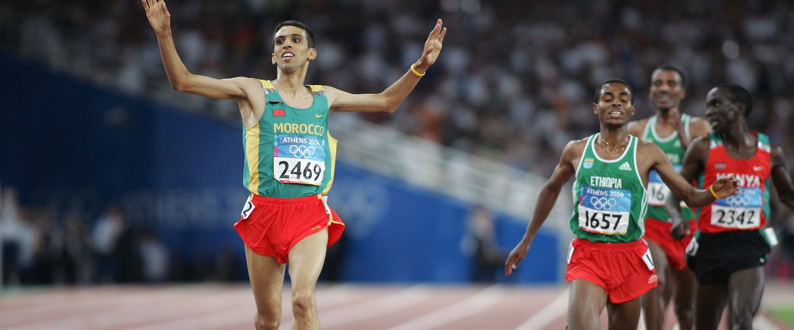
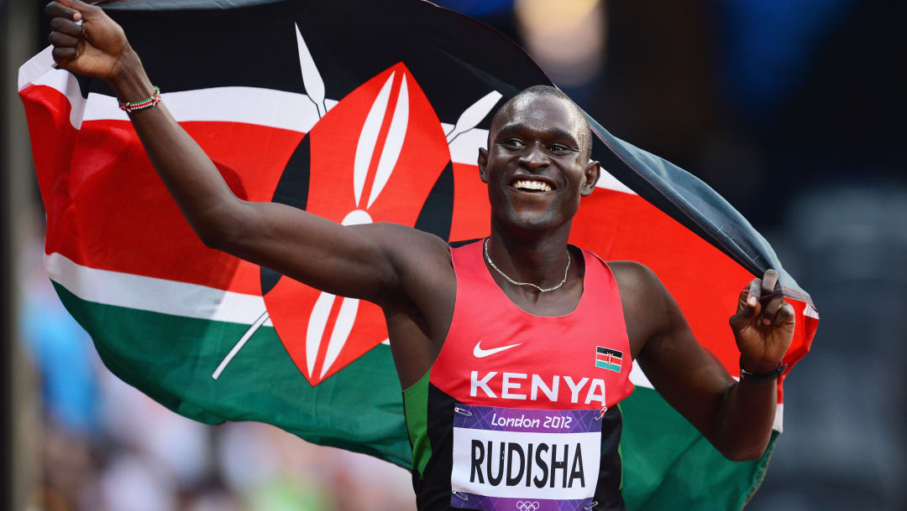
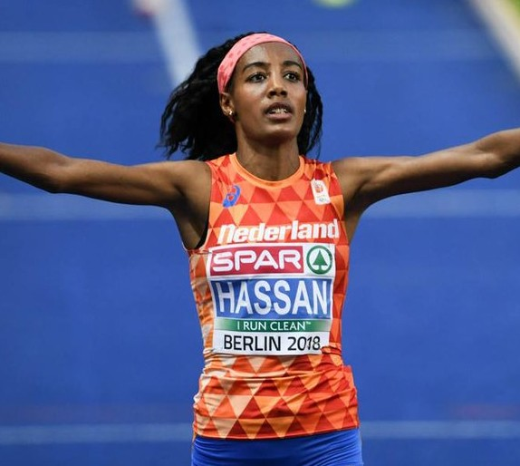

The world of running has various famous runners who have dominated the sport.
My personal favorite is pictured here -- his name is Hicham El Guerrouj. He lead the world with the fasted mile ever at 3:43

David Rudisha
My second favorite runner of all time is David Rudisha - who holds the world record for the fastest 800M at 1:40

Sifan Hassan
Another one of my favorite runners is Sifan Hassan who holds the woman's record for the fastet mile completed at 4:12